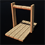

RM Brawl 1.26 Patch Notes
Early game got big balance changes, early rushes are weaker and the fastest strategies have been heavily nerfed.
Siege gameplay is reworked, Catapults are now available to all civilizations.
All civilizations get Ballistics.
Change-logs have been updated to match patch 1.26
Check this to see what all has changed since AOE Rise of Rome 1.0a
Check this to see what all has changed since UPatch 1.1 R4
Check this to see what all has changed since AOE:DE
General Changes
 Tool Age
Tool Age
Requirement 2 Stone Age buildings -> Granary & Storage Pit
Creel (new technology)
Requires Stone Age
Wood cost 60
Research time 10 seconds
Research location Granary
Effect Hunters +15 carry capacity (No work rate bonus)
Available All civilizations
 Linen Cloth
Linen Cloth
Gold cost 60 -> 50
Stone cost 80 -> 75
 logistics
logistics
Bonus removed Barrack units take ½ population
new bonus Barrack units move 20% faster, Barracks work 25% faster
 Heavy Camel Rider (unit upgrade)
Heavy Camel Rider (unit upgrade)
Requirements Iron Age
Food cost 1300
Gold cost 500
Research time 150s
Effect:
Hit points 125 -> 180
Damage 6 -> 9
Bonus damage vs cavalry 4 -> 8
Slash armor 0 -> 3
Pierce armor 0 -> 1
Available Berbers, Carthaginian, Egyptian, Hittite, Minoan, Palmyra, Phoenician, Scythia, Sumerian
Camel Rider & Heavy Camel Rider
Bonus damage against Elephants 4 -> 0
Siege and Tower Changes
 Mathematics (new technology)
Mathematics (new technology)
Requires Bronze Age
Food cost 120
Wood cost 60
Research time 50 seconds
Research location Government Center
Effect All siege units +1 range and LoS
Available All civilizations
 Engineering
Engineering
New requirement Mathematics
Effect All siege units +2 range and LoS -> +1 range and LoS
 Catapult
Catapult
Available for all civilizations (Enabled for Carthaginian, Choson, Parthia, Phoenician, Yamato)
 Ballista Tower
Ballista Tower
Reload time 3.1 -> 2.7
Unique Technologies
 Unique Technology
Unique Technology
Cost changed from having unique cost into 3 tiered cost system.
This way it is much easier to remember and plan the usage of each technology.
Now all unique technologies cost food and gold.
Tiered Cost System
Tier 1 75F, 50G [6] (Carthaginian, Choson, Egyptian, Greek, Persian, Shang)
Tier 2 150F, 75G [7] (Assyrian, Babylonian, Berbers, Hittite, Parthia, Thrace, Yamato)
Tier 3 200F, 125G [7] (Macedonian, Minoan, Palmyra, Phoenician, Sumerian Roman, Scythia)
Assyrian - Arson
Cost 180 Wood, 120 Gold -> 150 Food, 75 Gold
Melee units deal +3 damage to buildings
Babylonian - Plain Bearing
Cost 150 Food, 80 Gold -> 150 Food, 75 Gold
All chariot units move 15% faster
Berbers - Smelting
Cost 120 Food, 80 Gold -> 150 Food, 75 Gold
Swordsmen and Legions +1 attack
Carthaginian - Panoply
Cost 120 Food, 60 Gold -> 75 Food, 50 Gold
All Academy units +30% HP
Choson - Fletching
Cost 120 Food, 60 Gold -> 75 Food, 50 Gold
All Archers +1 range
Egyptian - Dipylon Shield
Cost 75 Food, 50 Gold
Hoplites attack 20% faster
Greek - Levies
Cost 80 Food, 30 Gold -> 75 Food, 50 Gold
Swordsmen and bowmen cost wood instead of gold
Hittite - Mahawi
Cost 125 Food, 75 Gold -> 150 Food, 75 Gold
Camel Riders attack 20% faster
Macedonian - Dry Dock
Cost 150 Food, 120 Wood -> 200 Food, 125 Gold
War ships +1 attack
Minoan - Machicolation
Cost 250 Food, 180 Stone -> 200 Food, 125 Gold
Towers +2 attack
Palmyra - Vamplate
Cost 180 Food, 100 Gold -> 200 Food, 125 Gold
Academy units +1 slash armor
Parthia - Linothorax
Cost 120 Food, 75 Gold -> 150 Food, 75 Gold
All Barrack units +1 slash armor
Persian - Lead Bolts
Cost 120 Food, 50 Gold -> 75 Food, 50 Gold
Slingers +1 damage
Phoenician - Padded Armor
Cost 125 Food, 90 Gold -> 200 Food, 125 Gold
All barrack units +1 pierce armor
Roman - Bodkin
Cost 250 Food, 140 Gold -> 200 Food, 125 Gold
All bowmen ignore unit armor
Scythia - Tusk Swords
Cost 250 Food, 160 Gold -> 200 Food, 125 Gold
All elephants +20% HP
Shang - Husbandry
Cost 80 Food, 50 Gold -> 75 Food, 50 Gold
Stables work 33% faster
Sumerian - Phajaan
Cost 140 Food, 75 Gold -> 200 Food, 125 Gold
Stable units +1 attack
Thrace - Lamellar
Cost 160 Food, 80 Gold -> 150 Food, 75 Gold
Archers take 1/2 population
Yamato - Chemistry
Cost 100 Food, 75 Gold -> 150 Food, 75 Gold
Stone Throwers +10 damage
Civilization Changes
Palmyra
Technologies enabled Logistics, Heavy Slinger
Persian
Bonus Triremes fire 33% faster -> 20% faster
Technology disabled Heavy Horse Archer
Technology enabled Ballistics
Scythia
Bonus All buildings +4 Line of Sight -> +5 line of Sight
Unique technology All elephants +20% HP -> +25% HP
Thrace
Unique technology Archers take ½ population -> Archery Ranges work 20% faster
Technology disabled Craftsmanship
Technology enabled Ballistics
Yamato
Unique technology Stone Throwers +10 damage -> Siege units +10 damage
Technology disabled Engineering